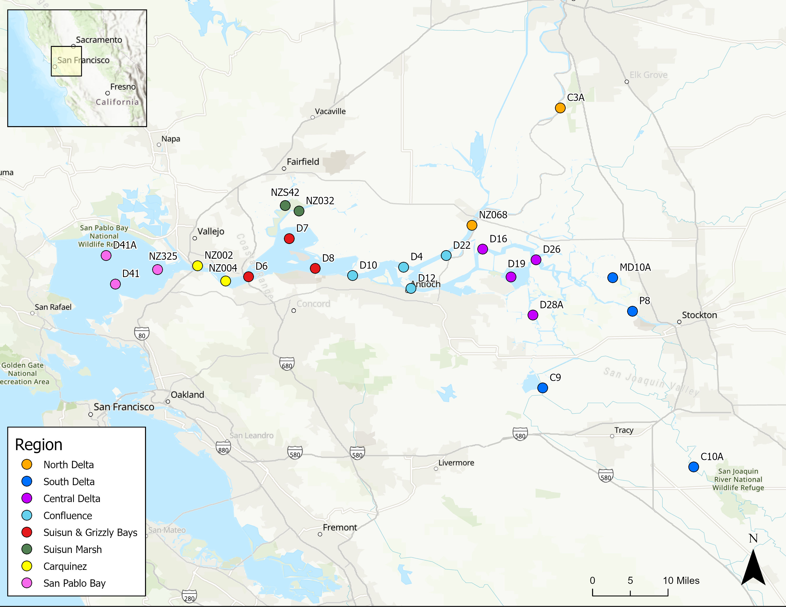
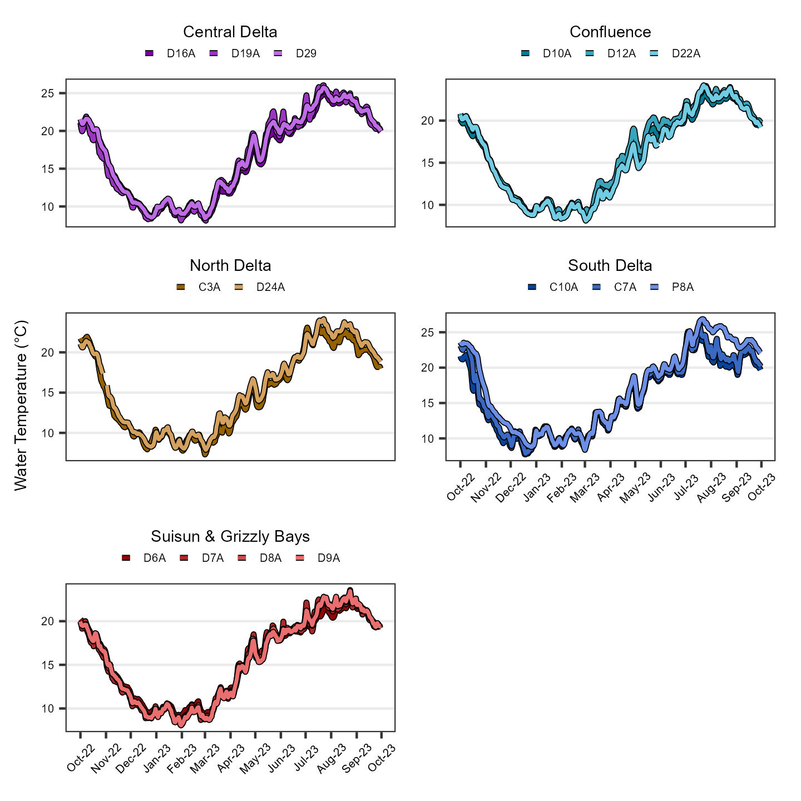
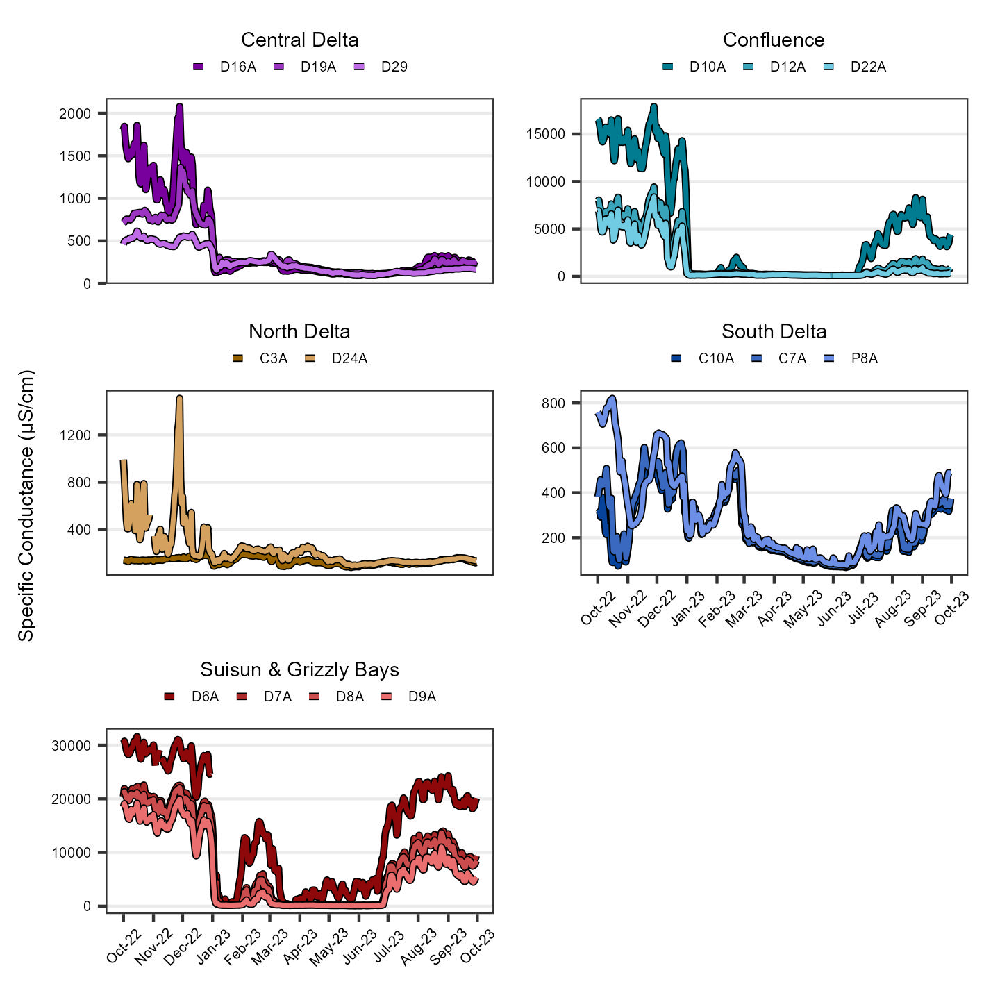
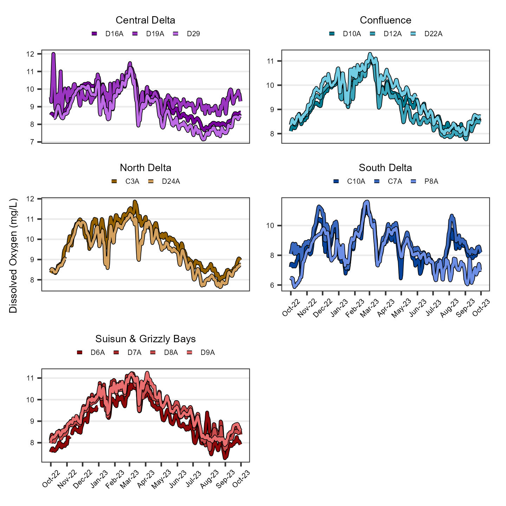
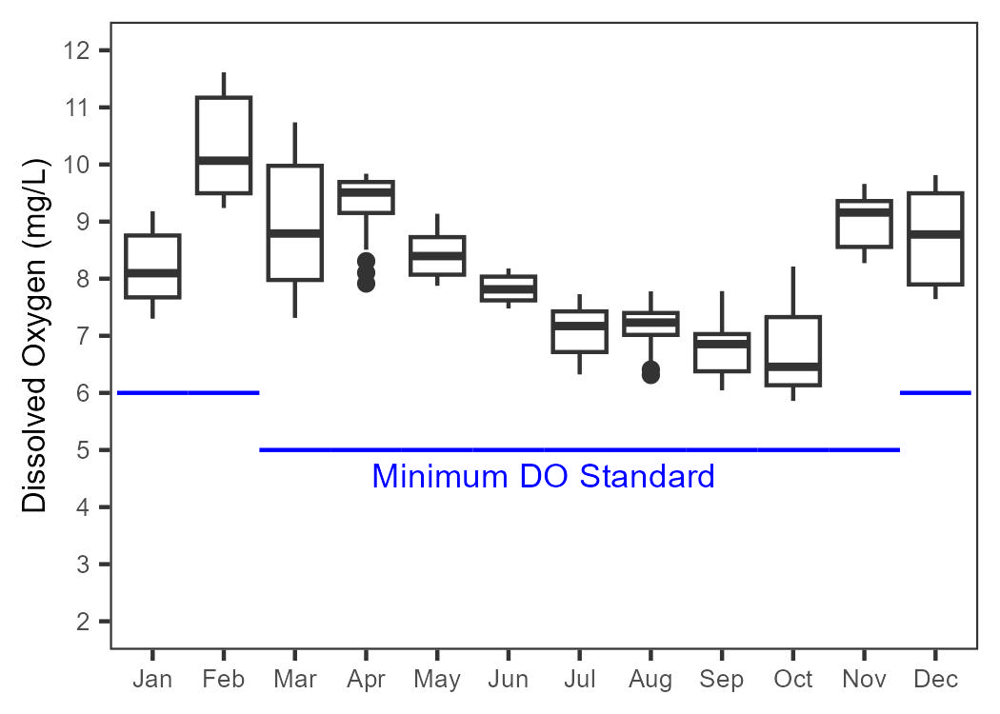
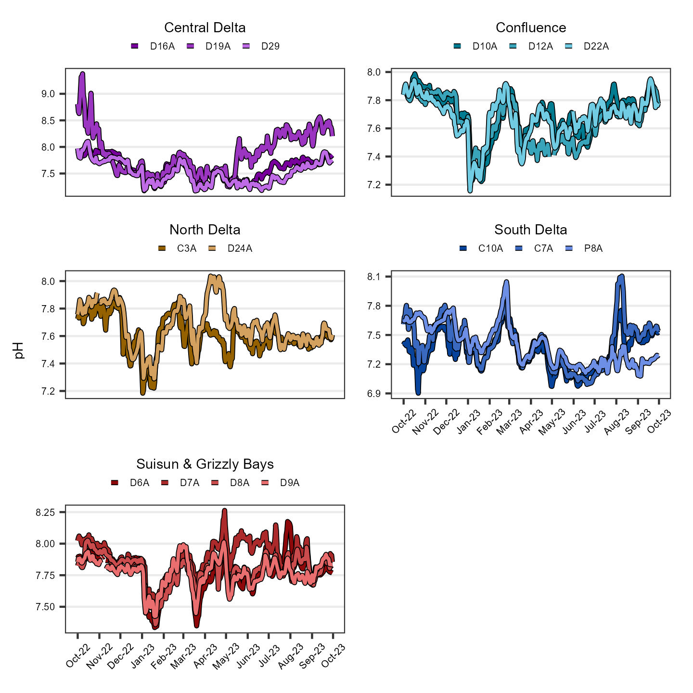
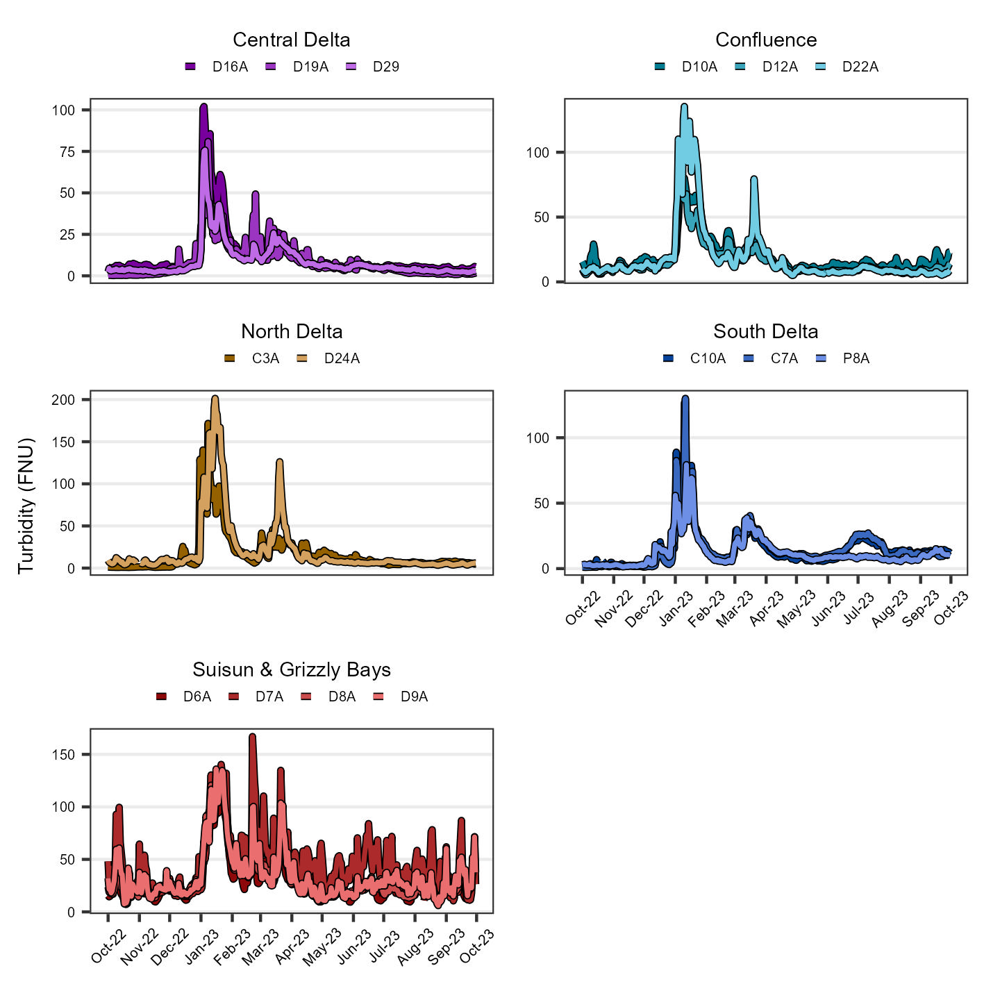
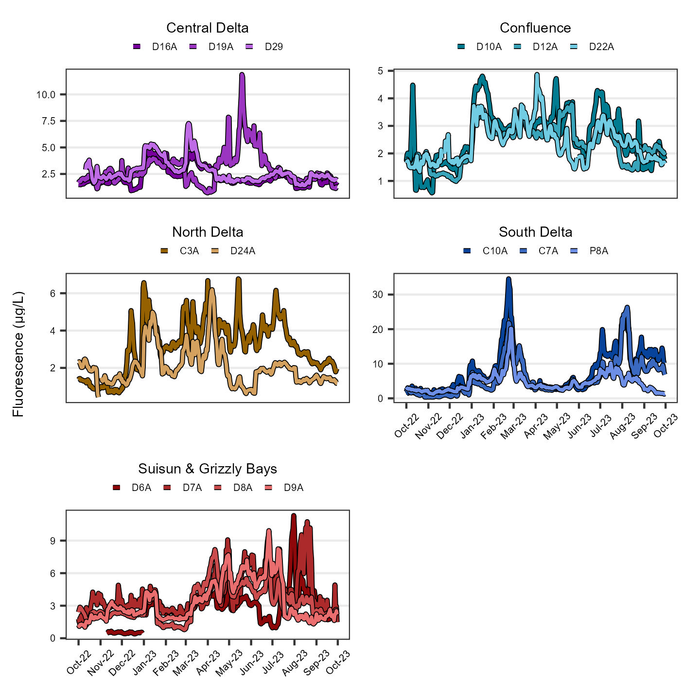

Continuous Water Quality Report
Introduction
The Department of Water Resources (DWR) and the US Bureau of Reclamation (USBR) are required by Water Right Decision 1641 (D-1641) to collect continuous water chemistry data to monitor the water quality at select sites in the upper San Francisco Estuary (Estuary). This report describes the results of these monitoring efforts for water year 2023 (October 1st 2022 through September 30th 2023) which was classified as a wet year in the Sacramento and San Joaquin Valleys (source). Results are compared to the previous water year, which was classified as critically dry in both valleys.
Methods
Discrete water quality samples were collected monthly at 24 monitoring sites throughout the Upper Estuary and were grouped into regions based on their geographic location . These sites represent a variety of aquatic habitats, from narrow, freshwater channels to broad, estuarine bays.
Water quality data was continuously monitored at 15 sites throughout the Upper Estuary and were grouped into regions based on their geographic location (Figure 1; Table 1). These sites represent a variety of aquatic habitats, from narrow, freshwater channels to broad, estuarine bays. Note: CEMP’s Sherman Island station (SSI), which was called D11A in previous reports, has been renamed D22A to better reflect it’s location in relation to historical station D22.
| Region | WY Index | Stations |
|---|---|---|
| Carquinez | Sacramento | NZ002, NZ004 |
| Central Delta | San Joaquin | D16, D19, D26, D28A |
| Confluence | Sacramento | D10, D12, D22, D4 |
| North Delta | Sacramento | C3A, NZ068 |
| San Pablo Bay | Sacramento | D41, D41A, NZ325 |
| South Delta | San Joaquin | C10A, C9, MD10A, P8 |
| Suisun & Grizzly Bays | Sacramento | D6, D7, D8 |
| Suisun Marsh | Sacramento | NZ032, NZS42 |
Data were collected for six water quality parameters. All water samples were collected 1-meter below the water surface using a float-mounted YSI EXO2 multi-parameter water quality sonde. These parameters are:
- Water Temperature (°C)
- Specific Conductance (μS/cm)
- Dissolved Oxygen (mg/L)
- pH
- Turbidity (FNU)
- Fluorescence (μg/L)
Regional facet graphs were created for each parameter. The average, minimum, and maximum values were determined for parameter, both overall and per region. Average summary statistics are reported as the mean (μ) ± the standard deviation.
For more in-depth methodology, see here.
Results
Water Temperature
The average water temperature value was 15.90 ± 5.19 °C; for comparison, the previous year average was 18.00 ± 5.11 °C. Values ranged from 7.32 °C to 26.90 °C. Per region average, minimum, and maximum values are shown in Table 2; time series plots are shown in Figure 2.
| Statistic | Central Delta | Confluence | North Delta | South Delta | Suisun & Grizzly Bays |
|---|---|---|---|---|---|
| Average | 16.50 | 15.90 | 15.20 | 16.30 | 15.50 |
| Min | 8.12 | 8.12 | 7.32 | 7.73 | 8.06 |
| Max | 26.00 | 24.20 | 24.10 | 26.90 | 23.60 |

Specific Conductance
The average specific conductance value was 3070 ± 6140 µS/cm; for comparison, the previous year average was 5470 ± 7800 µS/cm. Values ranged from 68 µS/cm to 31600 µS/cm. Per region average, minimum, and maximum values are shown in Table 3; time series plots are shown in Figure 3.
| Statistic | Central Delta | Confluence | North Delta | South Delta | Suisun & Grizzly Bays |
|---|---|---|---|---|---|
| Average | 355 | 2710 | 181 | 266 | 8940 |
| Min | 93 | 90 | 81 | 68 | 108 |
| Max | 2080 | 17900 | 1510 | 820 | 31600 |

Dissolved Oxygen
The average dissolved oxygen value was 9.16 ± 1.04 mg/L; for comparison, the previous year average was 8.97 ± 1.14 mg/L. Values ranged from 5.86 mg/L to 12.00 mg/L. Per region average, minimum, and maximum values are shown in Table 4; time series plots are shown in Figure 4.
| Statistic | Central Delta | Confluence | North Delta | South Delta | Suisun & Grizzly Bays |
|---|---|---|---|---|---|
| Average | 9.17 | 9.27 | 9.62 | 8.55 | 9.32 |
| Min | 7.14 | 7.76 | 7.64 | 5.86 | 7.28 |
| Max | 12.00 | 11.30 | 11.90 | 11.60 | 11.20 |

Stockton Station DO Values
C-EMP monitors DO at the Stockton Ship channel to determine if/when it fall below limits established by the CVRWQCB (1998). For the months that coincide with the passage of fall-run Chinook salmon (October, November, and September), values fell below the 6 mg/L limit in October. For all other months, values did not fall below the 5 mg/L limit. A boxplot of the DO values is shown in Figure 5.

pH
The average pH value was 7.64 ± 0.26; for comparison, the previous year average was 7.87 ± 0.32. Values ranged from 6.90 to 9.38. Per region average, minimum, and maximum values are shown in Table 5; time series plots are shown in Figure 6.
| Statistic | Central Delta | Confluence | North Delta | South Delta | Suisun & Grizzly Bays |
|---|---|---|---|---|---|
| Average | 7.67 | 7.67 | 7.64 | 7.38 | 7.81 |
| Min | 7.17 | 7.16 | 7.18 | 6.90 | 7.34 |
| Max | 9.38 | 7.99 | 8.04 | 8.11 | 8.26 |

Turbidity
The average turbidity value was 19.90 ± 22.30 FNU; for comparison, the previous year average was 14.70 ± 16.50 FNU. Values ranged from 0.20 FNU to 201.00 FNU. Per region average, minimum, and maximum values are shown in Table 6; time series plots are shown in Figure 7.
| Statistic | Central Delta | Confluence | North Delta | South Delta | Suisun & Grizzly Bays |
|---|---|---|---|---|---|
| Average | 9.66 | 17.80 | 18.60 | 13.70 | 34.60 |
| Min | 0.20 | 4.93 | 0.82 | 0.93 | 5.98 |
| Max | 102.00 | 135.00 | 201.00 | 130.00 | 167.00 |

Chlorophyll a Fluorescence
The average fluorescence value was 3.48 ± 2.96 µg/L; for comparison, the previous year average was 2.86 ± 1.76 µg/L. Values ranged from 0.34 µg/L to 34.50 µg/L. Per region average, minimum, and maximum values are shown in Table 7; time series plots are shown in Figure 8.
| Statistic | Central Delta | Confluence | North Delta | South Delta | Suisun & Grizzly Bays |
|---|---|---|---|---|---|
| Average | 2.64 | 2.45 | 2.62 | 6.10 | 3.35 |
| Min | 0.72 | 0.57 | 0.43 | 0.34 | 0.40 |
| Max | 11.90 | 4.86 | 6.77 | 34.50 | 11.30 |

Interpretations
To be written by section lead
References
[CVRWQCB] Central Valley Regional Water Quality Control Board. (1998). Water Quality Control Plan for the California Regional Water Quality Control Board Central Valley Region, the Sacramento River Basin, and San Joaquin River Basin [Basin Plan] (4th ed.).
[SWRCB] State Water Resources Control Board. (1995). Water Quality Control Plan for the San Francisco Bay/Sacramento-San Joaquin Estuary [Bay-Delta Plan] (Adopted May 22, 1995, pursuant to Water Right Order 95-1). Sacramento, CA.
[SWRCB] State Water Resources Control Board. (1999). Water Rights Decision 1641 for the Sacramento-San Joaquin Delta and Suisun Marsh (Adopted December 29, 1999, Revised in Accordance with order WR2000-02 March 15, 2000). Sacramento, CA.
Archived Reports
Old EMP continuous water quality reports can be found here.